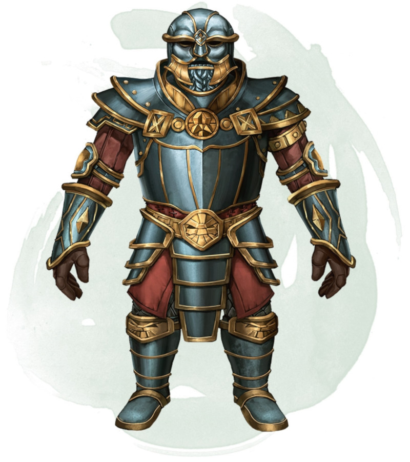

Armure d'invulnérabilité
Armure (harnois), légendaire (nécessite un lien)
Vous avez une résistance contre tous les dégâts non magiques tant que vous portez cette armure. De plus, vous pouvez utiliser une action pour vous immuniser aux dégâts non magiques pendant 10 minutes ou jusqu'à ce que vous ne portiez plus cette armure. Une fois que cette action spéciale est utilisée, elle ne peut l'être de nouveau avant la prochaine aube.
Dungeon Master´s Guide (SRD)
